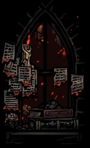
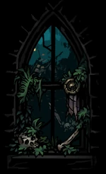
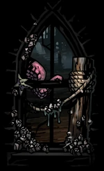
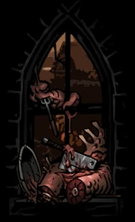
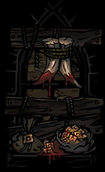
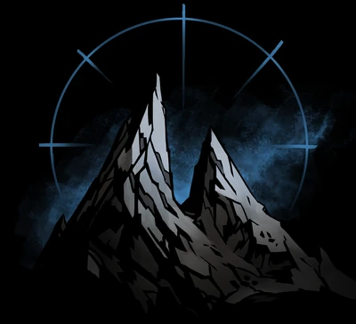

This is where we will explain to you the diffrences between each biome and
what to expect to find in each one in terms of regione specific trinkets and events
|  |
"Behold the great cities of man - ruined and aflame.". Being one of the first biomes available to the player,
it is one of the best at introducing the player to the perils and challenges that are to be
expected later on. With the city aflame by the citizens that went mad, the player can expect
to be introduced to the fire DOT (damage over time) mechanic that serves a similar role as bleed
and blight. Adding to the deadly arsenal of this areas foes and to a potentially to yours.
However , this flaming wreck can offer one of the most powerful trinkets in the game to fast
characters and those that use fire DOT’s such as runaway or Plague doctor later on in your
progression. It also host one of the most powerful trophy rewards that is universally useful,
granting burn DOT on critical hits at the cost of occasionally combusting yourself at the start
of combat. With a caveat like that and critical hits being easier to come by then in the previous
game, it is worth a try to get an early start in your future playthroughs. |
 |
"War rewards only resignation.".The second available biome to the player on contrast in my
opinion is one the more gruesome introductions. Having to navigate the viny undergrowth’s of
the forest and forgotten trenches, This abandoned battlefield is a place which will test your
parties composition. For while you could get away to an extent with having a bad team in the
sprawl, here the enemies will take advantage of your weaknesses and use their superior
positioning to its fullest. Which is why for a starting region it is a swift wake up call to
those playing to learn quickly and adapt to make it through the game. Besides that, this lands
treasures focus more on getting hit to force hindrances on the attacker, and slower characters
utilizing from extra turns when hit. Thus, if you run a team that has bulky yet slow characters
that can taunt the enemies or guard vulnerable allies, then this region will be a treat for them. |
|  |
"Propriety floats listless on the tide, brined in noxious degradation.".After completing the
first chapter you get access to other biomes of the game, one of which being the coast.
Before being a peaceful fishing hamlet, now turned to a place of worship and transformations by
the local fishermen. Desperately searching for a way to save themselves from the chaos of the
world. With this comes one of the only biome specific mechanic called “the fog”. This comes into
effect periodically during combat, where all your heroes get either hindered or stressed out.
However after the turn when the fog enters ends, it disappears which has a chance to reduce
someone’s stress. With that in mind What it holds in treasures is more specific, as this region
specializes in resisting movement and bleed whilst amplifying bleed DOTs. Giving bleed builds
like highwaymen or hellion some powerful options, whilst giving more resistance to party members
in need of it. |
|  |
"The rancid crop grows unchecked and abhorrent..." This rotting farmstead which was once a
land of bountiful crop and livestock, starting becoming more corrupt as the events of the
story transpired. Running out of food and starving, the lords and peasants had no choice
but to try these yields for some sense of sustenance, but this action would prove to
change these people figuratively and literally. For now they walk the fields as monsters
of endless hunger and tend to the sick and rotting plants that grow here, worshipping the
child of the harvest that now lingers among them. Now besides that there is not much to say
about them aside from the treasures that can be found here. From which this location
specializes in blight effects and increasing health gain. Because of this it makes for a
great place for characters who specialize in blight damage like plague doctor,
grave robber and even flagellant. |
|  |
"Tread carefully and quickly. This is swine country." After a few runs you will get the
travel through the dense caverns of the sluice to face the beast bellow in promise of treasure.
However there will be no baubles down here, for this is one biome which has a distinct lack of
baubles. This can be problematic since that is the currency that allows you to buy trinkets on
your journey. But it makes up for it with the opportunity to get a larger sum of treasury then
normal. Allowing you to buy way more food, benefits and buffs then normal. So overall it is
most of time worth going there over all the other locations just for the sheer amount of
treasure you can get. As for trinkets they are more lackluster then most others, focusing on
having low light in combat to get the full benefits of the trinket. This could be useful if
further in your playthrough you chose to start with flames that reduce your total flame. But
most of the time it is not worth the trouble. |
|  |
"At last the great Ziggurat - temple of failure and regret!" The last part of your jorney,
and the usual end of your playthrough of an act. This place serves to test the player for their
skill, composition and knowledge of the mechanics. However, before the boss fight there is
always a cultist encounter to wear you down. These encounter increase in difficulty and amount
with each future act, increasing from 1 in the first act to 4 in the last. Other then that
there will be no rewards or trinkets given for these fight since you will not put them to use
after anyway. |